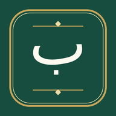

يُهيَّأ خط صفحة المصحف…
يمكنك البحث دون تشكيل، مثل: إن الله غفور رحيم
يمكنك أيضًا سحب صفحة المصحف يمينًا أو يسارًا، أو لمس إحدى حافتيها.
اختر الألوان الأكثر راحة لعينيك؛ وسيُحفظ اختيارك تلقائيًا.

يظهر بصائر على الشاشة الرئيسية كتطبيق مستقل، ويحفظ موضع القراءة وألوانك المختارة.
يُنزل البرنامج السور الـ١١٤ للقارئ المختار من المصدر. الجودة المستهدفة 48 kbps، وقد يستخدم المصدر أقرب جودة متاحة.
مصدر تلاوة السور: MP3Quran.net · مصدر تلاوة الآيات: Al Quran Cloud · رواية حفص عن عاصم.
مشروع قرآني تفاعلي يصاحب القارئ أثناء تلاوته، ويلفت نظره إلى دقائق التعبير ووجوه البيان في القرآن الكريم، من خلال أسئلة تنشأ من ملاحظة النص وتدبّره.
يضم الإصدار الحالي من «بصائر» 12,341 سؤالًا وجوابًا بيانيًا، مرتبطة بآيات القرآن الكريم، مع توثيق مصادر الأجوبة قدر الإمكان.
اعتمد مشروع «بصائر» اعتمادًا رئيسيًا على «موسوعة التفسير البلاغي»، وهي من منشورات مجمع القرآن الكريم بالشارقة، بوصفها من أكبر روافد مادته العلمية، مع الإفادة من كتب التفسير والبلاغة والمصادر العلمية الموثوقة الأخرى.
واستُقرئت المادة سورةً سورة وآيةً آية، في مراحل متعددة، مع التركيز على المواضع التي تستوقف قارئ القرآن، ومن أبرزها:
لماذا اختيرت هذه الكلمة أو الصيغة أو الحرف؟ وما دلالة التقديم والتأخير؟ وما أثر الذكر والحذف والتكرار؟ وما الذي تضيفه الصورة البيانية؟ ولماذا اختلف التعبير بين الآيات المتشابهة؟ وما مناسبة ختام الآية وأسماء الله الواردة فيها؟
ولم يكن المقصود تحويل كل لطيفة بلاغية إلى سؤال؛ بل انتقاء السؤال الذي له باعث ظاهر في النص، ويكشف دقة التعبير، أو يوضح فرقًا بين الآيات المتشابهة، أو يحل إشكالًا حقيقيًا لدى القارئ.
«بصائر» نافذة للتدبر والتأمل، ولا يغني عن كتب التفسير المعتمدة والرجوع إلى أهل العلم.